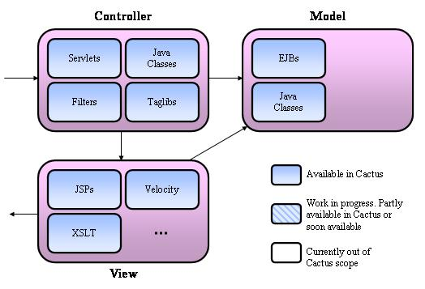

Current scope and status of Cactus
Cactus has the ability to unit test the following kind of components
running in a Servlet/EJB container:

Support for testing the View layer is done through integration
with HttpUnit.
This is functional unit testing (see the
What is Cactus
page, for a description of the different kinds of unit tests).
EJB unit testing is currently done by calling the EJB to unit test as
you would if you were writing code to call an EJB from a servlet (See
the EJB Howto page for more details).
We are working on providing an EJB Redirector.
General design features
-
Cactus gives you a very good confidence that your code is going
to run fine on the server it will be deployed on (thanks to Cactus
in-container approach that executes the test inside the
container),
-
Cactus let you test container interactions. This is essential
in a world where containers are providing more and more
features for their components every day,
-
Cactus let you test and automate the deployment process to your
server (using powerful Integration Modules with different build
tools and IDEs),
-
Cactus does not mandate any change to your classes to test, although
it helps think about writing better code and do some refactoring,
-
Cactus provides a good middle ground in term of test granularity:
too fine-grained tests are hard to write (like Mock Objects tests
that completely simulates the domain objects and focus exclusively
on unit testing your code logic) and need complementary tests. Too
coarse-grained tests (like functional tests) are not enough to
easily uncover bugs and work in a iterative development process
where tests are run very often to ensure everything is working. We
believe Cactus provides a good compromise.
Detailed feature list
=
New in Cactus 1.7
-
Integrates seamlessly with the JUnit testing framework. Any tool
that works with JUnit will work with Cactus because a Cactus test
is a JUnit test! See the
TestCase Howto
tutorial for details.
-
Provides a
ServletTestCase class that your test case
can extend for unit testing Servlets or any java classes that
make use of Servlet API objects.
-
Provides a
JspTestCase class that your test case
can extend for unit testing Taglibs or any java classes that
make use of JSP API objects. In addition, provides a
TestJspTagLifecycle extension to help test JSP Taglibs.
-
Provides a
FilterTestCase class that your test case
can extend for unit testing Filters or any java classes that
make use of Filter API objects.
-
Allows to run existing JUnit Test Case classes on the server side.
This is provided by special Cactus TestSuite classes that wrap
your existing Test Cases.
-
Ability to unit test EJBs (including local interfaces) by calling
them from a
ServletTestCase,
JspTestCase or FilterTestCase class (see
the EJB Howto).
-
Extends JUnit by defining two additional (and optional) methods
that can be implemented for each test case (i.e. for each
testXXX() method): beginXXX() and
endXXX(). See the
TestCase Howto tutorial
for details.
-
It is possible to set up the following in
beginXXX():
-
HTTP cookies,
-
Servlet Session Cookie,
-
HTTP parameters (GET and POST),
-
HTTP Headers,
-
Whether an HTTP Session will be created or not on the server side,
-
BASIC and Form-based Authentication parameters,
-
Send any data as POST data
-
It is possible to verify the following in
endXXX():
-
Returned data (as String or using
HttpUnit),
-
Returned cookies,
-
Returned HTTP headers,
-
Returned response code
-
Handles
setUp() and tearDown() methods
which work the same as for JUnit except that they are run on the
server side before and after calling each testXXX()
method
-
Extends JUnit by providing a global
begin() and
end() which are run on the client side before and
after each test. They are the equivalent of JUnit's
setUp() and tearDown() which are run
on the Server side.
-
Provides several Integration Module for easily running Cactus
tests:
-
Ant Integration Module: generic and directly usable
scripts to run Cactus tests (start and stop containers
automatically, package and deploy a Cactify webapp and run the
tests).
-
Browser Integration: It is possible to run Cactus tests
from a Browser. Results can be displayed either in XML or in
HTML (either server-side XSLT or Browser XSLT for the Browsers
which support it)
-
Maven Integration: Complete end to end Cactus test
automation with minimal setup. It's probably currently the easiest
way to run Cactus tests (provided you have Maven installed on
your machine).
-
Several other integration provided by third parties.
-
The Ant integration module and the Maven integraton one support the
following containers:
-
Tomcat 3.x
-
Tomcat 4.x
-
Tomcat 5.0.x
-
Resin 2.x
-
Resin 3.x (above version 3.0.5)
-
WebLogic 7.x
-
Orion 1.x
-
Orion 2.x
-
JBoss/Jetty 3.x
-
Note: The WebLogic 6.x support has been dropped as BEA does not
provide a link to download WebLogic 6.x anymore.
-
Tested with all versions of JUnit up to the current one in JUnit CVS.
-
Support for Servlet API 2.2 and 2.3 (Support for Servlet API 2.1 is
no longer provided)
-
Works with JDK 1.4+
-
Wraps some of the standard API objects in order to provide
additional methods to help write unit tests.
See the TestCase
Howto tutorial for details.
-
Internal logging using Jakarta Commons Logging facade framework
to help debug problems.
-
HttpUnit integration. See the
HttpUnit Howto tutorial
for details. This enables
Cactus to provide strong and integrated functional
unit testing features.
-
Uses Jakarta Commons
HttpClient for HTTP
connections.
-
Support for BASIC and Form-based authentication methods. You can test
code that uses the Servlet security API (see the
Security Howto).
-
Ability to specify, per test case, what redirector to use. Useful,
for example, when you want to test some code that is using the
Servlet Security API at the same time as other code that should not
be protected.
-
Provides a
JettyTestSetup JUnit TestSetup class to
automatically start Jetty before a test suite starts executing.
-
Provide a sample application that demonstrates how to write Cactus
tests for Servlet, Taglibs and Filters. It also show how to use the
Ant Integration Module to automate the full process.
-
Provide a sample application that demonstrates how to use the
JettyTestSetup feature to run Cactus tests.
-
Provide a sample application that demonstrates how to write Cactus
tests for EJBs. It also show how to use the Ant Integration Module
to automate the full process.
-
Supports internationalization.
|